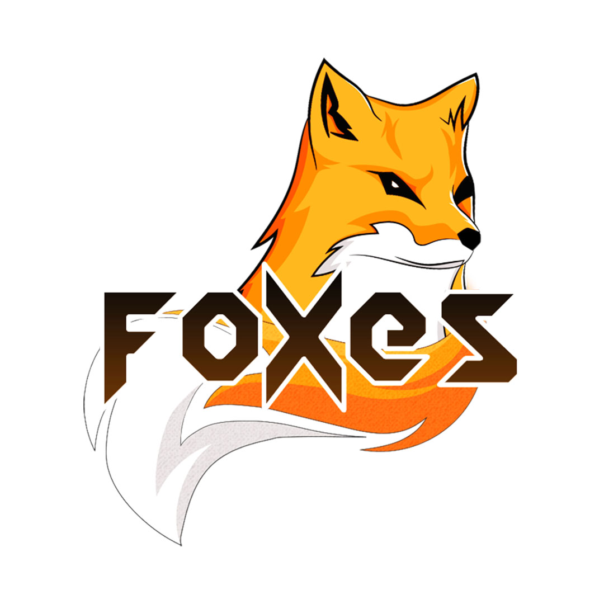

Fotografering

Portrett, arrangement, sport og innholdsfoto produsert for ulike kommunikasjonsbehov.
Foto, video og design som gir budskapet et tydelig uttrykk.
Portrett, arrangement, sport og innholdsfoto produsert for ulike kommunikasjonsbehov.

Opptak, regi og redigering av video til sosiale medier, arrangementer og digital kommunikasjon.

Innhold utviklet fra idé og tekst til design, publisering og analyse av resultatene.
En visuell stemme som snakker, uten å si et ord.
En grafisk profil skal være konsekvent, ikke et “one-hit-wonder”. Den må skinne like sterkt i alt fra visjon og samfunnsoppdrag til fargevalg, typografi og visuelle elementer. Når den leverer en tydelig og distinkt visuell identitet, bygger den tillit og gjenkjennelse. For meg handler en sterk profil om mer enn bare estetikk – den sier noe om hvem dere er. Derfor legger jeg alltid vekt på:
Minimalistisk eleganse – logoen skal være stram, fleksibel og fungere i alle settinger, enten den brukes ensfarget eller med full effekt. Den skal være like tydelig øverst i et dokument som på messevegger eller roll-ups.
Tidløs overføring – farger, typografi og designkomponenter skal fungere på alt, fra digitale flater til fysisk materiell, og skape en konsistent opplevelse.
Visuell tone som stemmer – profilens uttrykk må samsvare med målgruppen og stemmen dere ønsker å formidle – profesjonell, kreativ, troverdig.
Tilpassbarhet og skalerbarhet – designsystemet skal være robust nok til å holde seg konsistent, men også fleksibelt nok til å utvikle seg
En velutviklet grafisk profil er den stille ambassadøren for merkevaren – den kommuniserer gjennom alt dere gjør, som farger, typografi, ikoner og form, og skaper et visuelt språk som står igjen hos mottakeren

Grunnleggende grafisk profil til en event startup

Grunnleggende grafisk profil til digitale flater for en content creator

Logo design for et norsk Esport lag

Logo design for content creator

Logo design for russegrupper gjennom freelance arbeid
{kind=link}